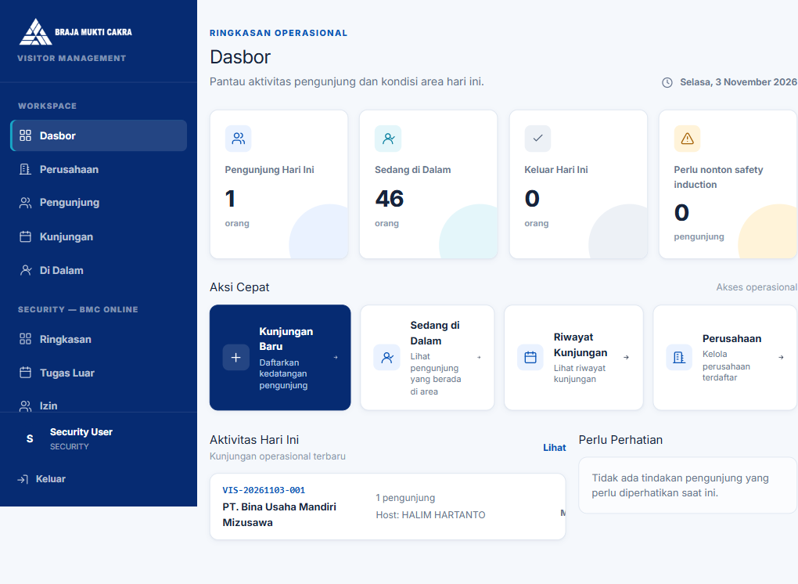

BMC Online
Security
05 / Login Security
Masuk ke
portal Security.
Petugas Security menggunakan portal untuk mencatat keberangkatan dan kepulangan karyawan.
05
- Buka portal SecurityKunjungi https://security.bmc.co.id.
- Login sebagai SecurityMasuk menggunakan akun petugas Security.
- Buka dashboard SecurityPastikan ringkasan tugas luar sudah tampil.
Jaga keamanan akun
Jangan membagikan kredensial Security.
Jangan membagikan kredensial Security.


06